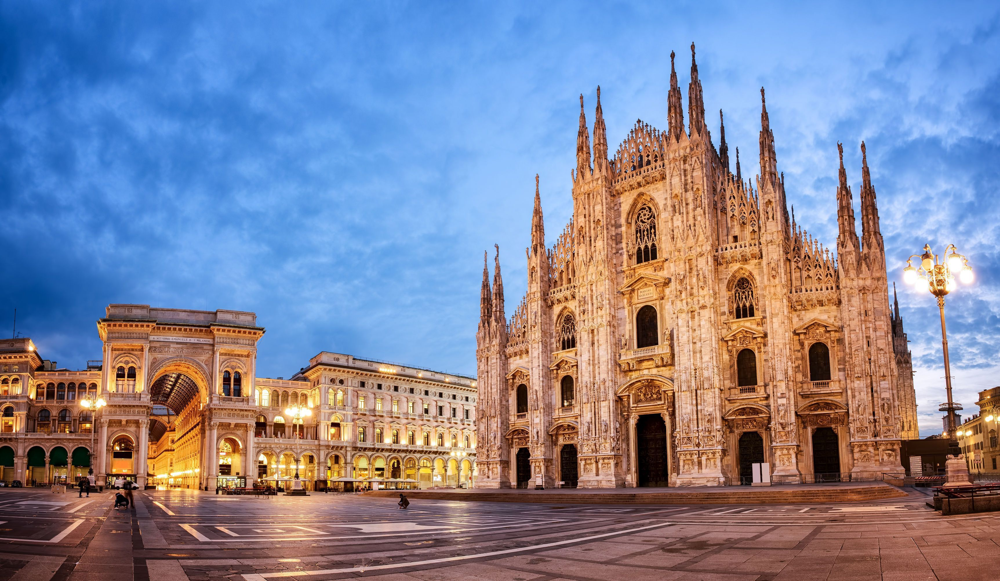
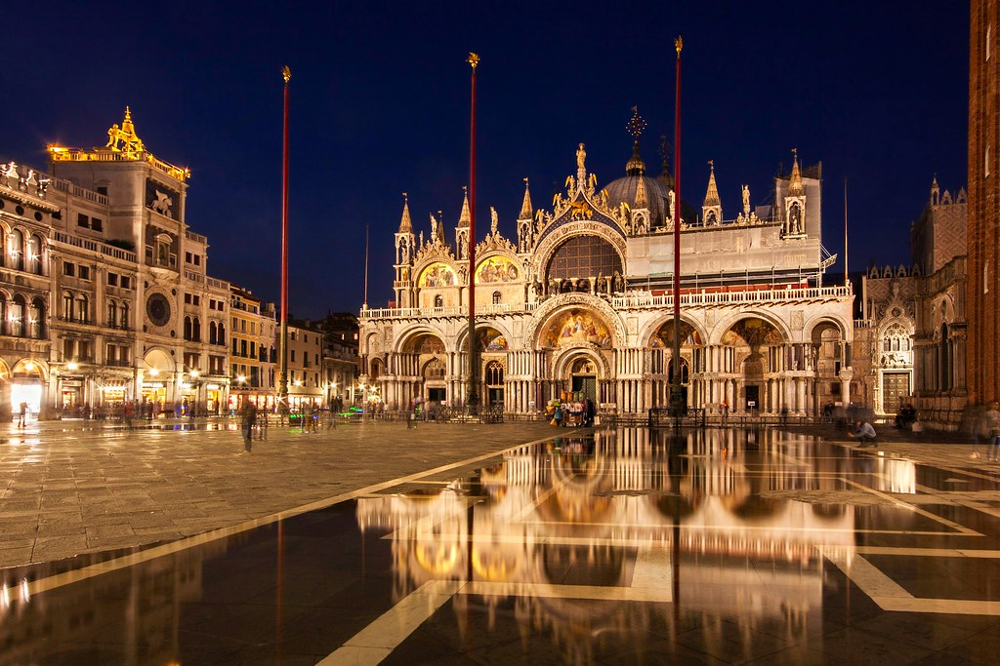

SUGGESTION PLACES
1. COLOSSEUM

The Colosseum is a must-see for tourists passing through Italy. The biggest amphitheatre ever constructed by the Roman Empire, this enormous structure served as a template for sports venues up until the present.
Notwithstanding fake sea battles, the building was constructed as a venue for public displays and mirrors. Its hardwood floor measures 83 by 48 metres. Two layers of tunnels, chambers, cells, and corridors for gladiators, employees, wild animals, and storage are located below.
The building serves as an essential reminder of Rome's long history and antiquity in contrast to the new developments that surround it today.
2. AMALFI COAST

A beach on the Sorrentine coast, south of Naples and Sorrento, is known as the Amalfi Coast and is a UNESCO World Heritage Site.
Along the steep hillsides that fall to the sea, hill towns are constructed one after another quickly.
Positano and Amalfi, with their vibrant church domes, are the two prominent cities in this region.
If you want to see the stunning, nearly vertical coastline from a different angle, you may travel the coast by land or travel between villages by boat.
3. TOWER OF PISA

The Leaning Tower of Pisa is one of the city's numerous attractions, but due to its deformity, it is famous across the world.
The tower's construction started in the 1100s, and when it neared the third level, sinking started, which eventually led to the lean-to.
It was anticipated to be finished by the year 2000 before restoration work began in the 1990s.
Currently, anyone may ascend the tower for a breathtaking perspective of the city.
The stunning Romanesque Church of Santa Maria Assunta and the elongated baptistery are situated next to the Leaning Tower, also known as La Torre Pendente, in Piazza dei Miracoli.
These pieces are all remarkable examples of mediaeval stone carving.
4. MILAN DUAMO

The stunning Santa Maria Nascente Cathedral in Milan, often known as "Il Duomo" by the locals, is one of the biggest cathedrals in the entire globe and arguably the greatest example of the shaky Gothic architecture worldwide.
The cathedral's 2,245 marble sculptures on the outside and 135 stone carvings that cap the roof give off an impressive initial impression that is only heightened as you go inside.
The biggest stained glass windows in the world are shown on the walls, which are supported by 52 enormous columns. The Gian Giacomo Medici Tomb and the bronze candelabrum from the 12th century are the highlights of the nave.
The graves and the octagonal chapel housing Saint Carlo Borromeo's golden relics are located below the high altar.The foundations of the basilica and baptistery from the fourth century are located beneath the Piazza del Duomo and may be accessed by steps close to the entrance.
You may go to the roof via elevator and traverse the heights between the carved stone peaks there.
5. BASILICA OF ST. MARK

The Basilica of St. Mark is among Venice's top tourist destinations. The majority of visitors to Venice will be at the well-known Piazza San Marco in front of the church, gazing westward at the facade.
With a variety of architectural styles primarily influenced by the Byzantine Empire, the structure itself is a piece of art that demonstrates Venice's extensive trading connections with the East.
The high altars and mosaics, which are decorated with gold and diamonds, are the focal points of the roomy interior. In addition to housing magnificent treasures of Italian art, the Doge's Palace is located next to the church.